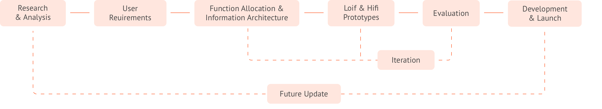
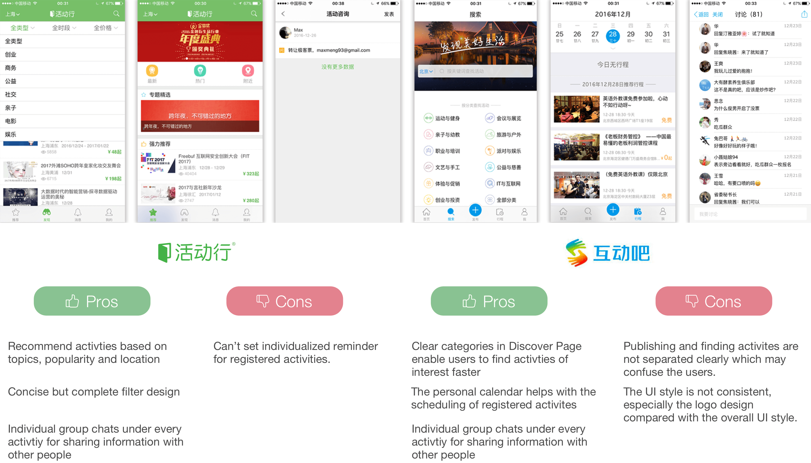
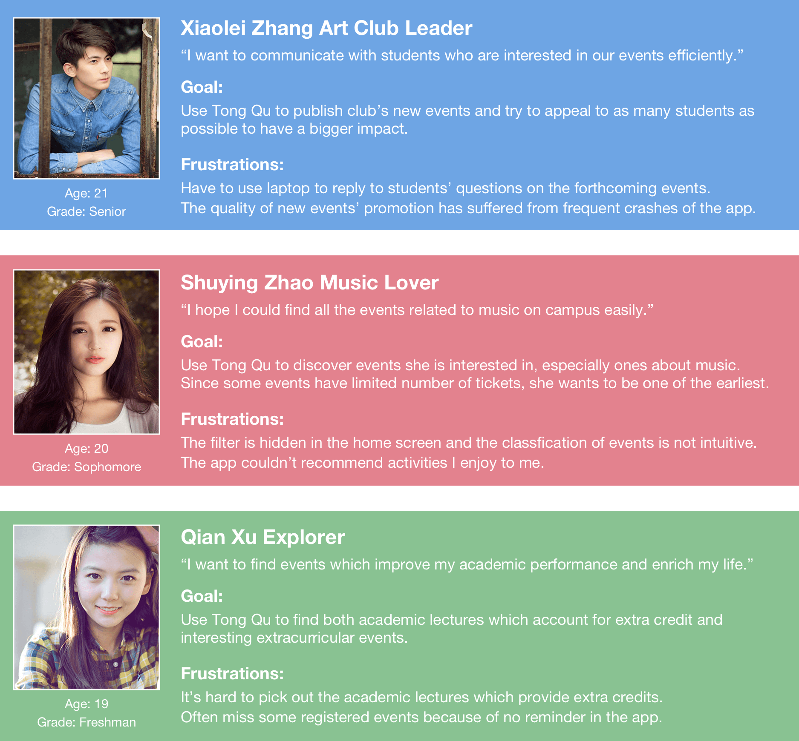
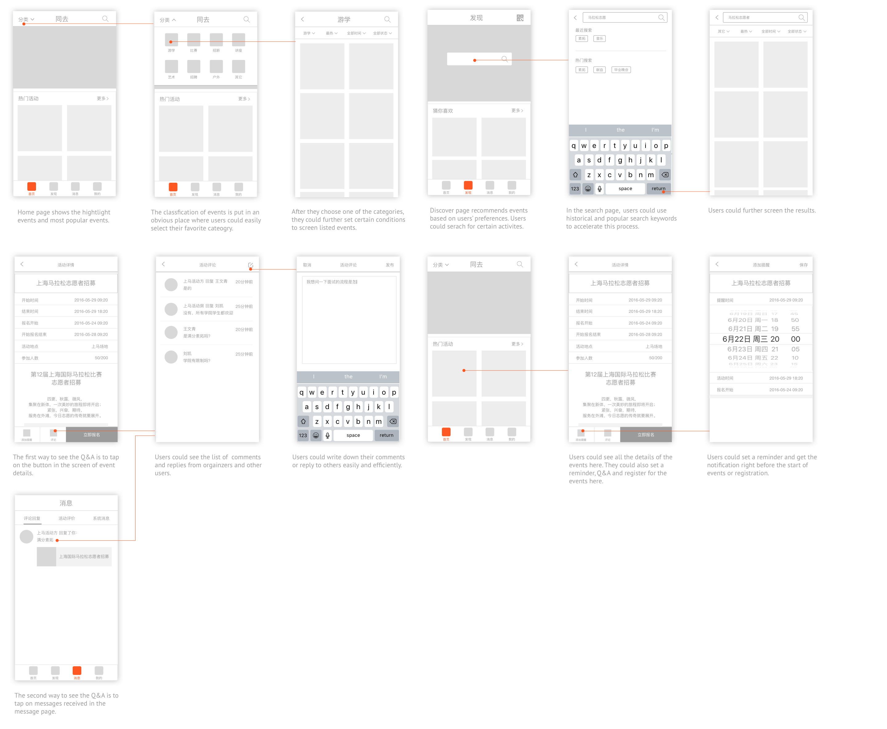
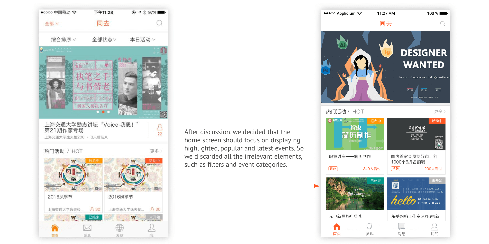
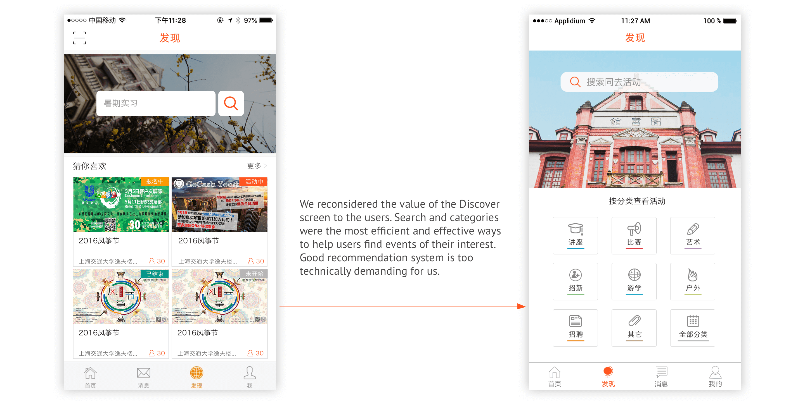
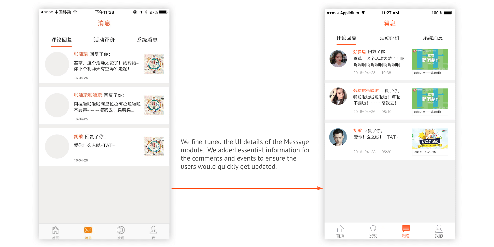
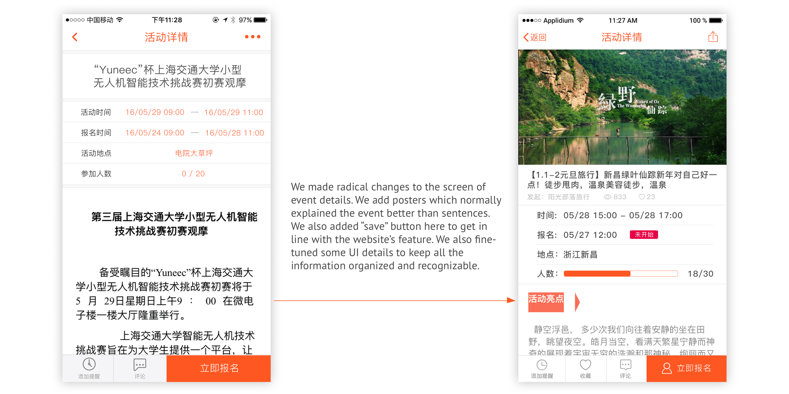
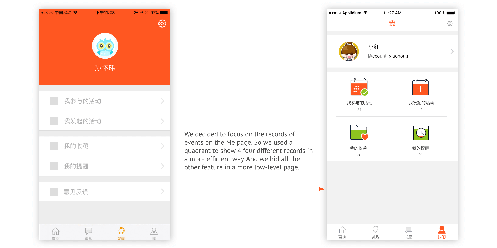
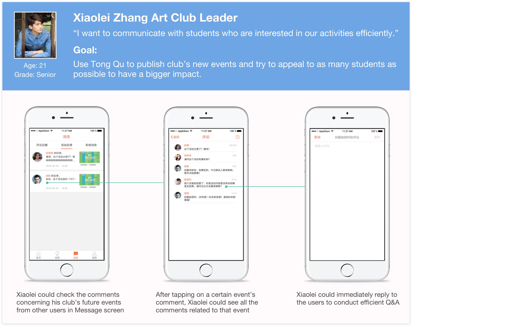

01. Overview
About Tong Qu
Tong Qu is the biggest event-finding platform in Shanghai Jiao Tong University. It allows students, student clubs, university staff and others to publish and find events on this platform. With this platform, the whole university community has become more vigorous, active and diverse.
So far, this platform consists of a website, iOS app and Android app.
Learn more about Tong Qu (Only support Chinese)
Problem & Objective
Tong Qu's iOS app hasn’t been updated for more than one year since previous iOS developers graduated. A lot of bugs came out and students complained about its malfunction and abandoned using it.
Therefore, our goal was to develop a new iOS version and improve the overall user experience.
My Role
1.In the formative research part, I collected user feedback and analytics data, prepared the plan and questions for the semi-structured interview and conducted competitive analysis. Then I took part in the analysis of our data, distilled the user requirements from the findings and came up with the personas.
2.I led the discussion of allocating functions and adjusting information architecture in our team. I designed most of the lofi and hifi prototypes.
3.Upon finishing the design work, I collaborated with iOS developer Ruiyang Wang to actualize the design and launched it to the iOS store. I also assisted product manager Xiaofan Lu carry out the app promotion by designing introduction page for the app on Tong Qu's website.
Duration
November 2016 - April 2017
Project Team
Huaiwei Sun | Xiaofan Lu | Ruiyang Wang | Sujun Zhang | Jiaxuan Wang | Lu Yan | Kangjie Chen
Tools
Pen | Paper | Photoshop | Sketch
Process
02. FORMATIVE RESEARCH
Research Plan
Research goals:
1. Found out existing pain points that users had encounted during their experience with Tong Qu's iOS app.
2. Discovered other user requirements from different user groups for adding/deleting/modifying features in the following design phases.
Selection of Methods and Justification:
1. Collecting Existing User Feedback - We collected Tong Qu's customer reviews from iOS App store and extracted the pain points and suggestions. This method helped us know the existing pain points and user requirements easily and quickly.
2. App Analytics - We checked the historical analytics data of Tong Qu and concluded the trends of how students used Tong Qu. It eanbled us to know the temporal changes in usage which reflected how users really used this product rather than what they talked about their experience.
3. Semi-structured Interviews - We asked students who have used Tong Qu before to probe how and why they used it and their preferences for the platform(website or app). We took digital notes during each interview. We learnt a lot about users' using habits and expectations.
4. Competitive Analysis - We studied exsiting products on the market which also played the role of event-publishing-and-finding platform. It taught us about how commercial products did their function design, information architecture, interaction design and detailed UI design.
Collecting Existing User Feedback
First, we collected feedback from iOS store. They ranged from 2014 to 2016. We mainly focused on those after the last update.
- Feedback from iOS stores mainly talked about the login and crash bugs which are the main pain points. As a result, we set the bug-fixing as our top priority in the later product requirement document.
App Analytics
Then we used the Apple's Analytics tool to look at the usage trends of Tong Qu. The marketing data are complete. But the usage data are limited to the users who are willing to share their data with Apple and developers like us.
- The usage data showed that students thought of Tong Qu like a tool which helped them enrich their campus life. When the breaks began, they barely used this app.
- Considered the limited number of users who wished to share data with us, our crashes stayed on a really high level which was congruent with users' direct feedback.
Semi-structured Interviews
After knowing the general usage feedback and data, we started to collect in-depth qualitative data including:
- what the users thought of Tong Qu.
- what they expected from Tong Qu's app.
- Whether they preferred app or just the website and why.
We conducted 13 semi-structured interviews with students who have used Tong Qu before(most of them are our friends and classmates) in Shanghai Jiao Tong University and took notes of their answers.
We used SWOT as a framework to categorize and analyze our notes in the spreadsheets.

Competitive Analysis
Meanwhile, we studied two popular apps on the market. We listed their Pros and Cons respectively in terms of the information architecture, function design, interaction design and detailed UI design.
Synthesis of Findings
We aggregrated all the insights distilled from the research above and categorized them into two groups: existing pain points and new requirements.
Personas
After the analysis of data, we used personas to represent the insights we got. We created 3 personas to illustrate our typical users, which helped us empathize with them and focus on their needs in the following design phases.
User Requirements
After team discussion, we created the product requirement document and set priorities for the requirements.
- First, we would ensure that our designs could meet the user requirements.
- Our designs also had to work in a proper way that users enjoyed, i.e, it needed to meet the design criteria.
- The priority would help us cut certain features if we ran out of time and make design decisions when we were in design dilemmas.
03. Design Iterations
Information Architecture
- Firstly, we listed all the essential functions and features for meeting the product requirements.
- Then we discarded part of them due to the restriction of APIs and extracurricular time we had for this project. The remaining functions and features were integrated with Tong Qu's previous information architecutre.
- Finally, we adjusted the details of the structure and created the new version's information architecture.
Lofi Wireframes
Based on the information architecture, we came up with the wireframes and flows. However, we tweaked some functions and revised the information architecture in order to better satisfy the product requirement document.
Check the details of the wireframes.
Hifi Prototype & Iterations
After reaching consensus on wireframes and flows, we created hifi prototypes. We didn't use inVision or other softwares to make the prototype. We manually showed all the screens and interactions on my laptop during the team review.
Due to the limit of time and skillset we had, we didn't conduct user tests, whether it's benchmarking test or A/B test. Each time after knocking out the lofi wireframes or hifi prototypes, we just held quick and dirty internal discussion and review on all the screens. Since we were users ourselves, we were able to figure out the main issues in terms of usability.
If I could do it again now, I would conduct feedback session after wireframe phase and benchmarking test after hifi prototype phase. Feedback session would give me insights of how useful our features are to users. Benchmarking test and SUS score would help me evaluate the detailed and overall usability of the prototype.
With the help of the feedback from other team members, I conducted several iterations.
    Final Design
1. Screens
2. User flow
Check the details of user flow here.
Use Case
Our design work was always revolved around the personas(users) and product requirement document. We tested our design and flow in our use cases to see if they could help users achieve their goals.
04. IMPLEMENTATION
Development
I exported all the assets and specs to the iOS developer Ruiyang Wang. After he finished 95% of the coding work, we spent several days together testing and debugging to ensure there were as few bugs as possible.
Launch and Publicity
When we were confident enough about our work, we launched it to the iOS store. I also designed introduction page on Tong Qu's website to introduce our new app. Check the introduction page here!
Several updates have been done after I graduated, so some design details are different from those in this project.

Project Impact
1. Objective Data:
In order to evaluate the impact of this update, I compared the analytics data from Nov. 2016 and data from Nov. 2017.
There is a huge improvement on usage data. Sessions(one session means that a user oepns the app and uses it for a certain amount of time once) have doubled. Active devices have went up to 1.4 times. Crashes have decreased by 93%.

2. Subjective Data:
I compared the ratings and reviews for old version and this new version from iOS store.
There is also a huge improvement on users' subjective feedback. Ratings from users have gone from 1.5 to 4.7. Most of the reviews spoke hightly of this update.